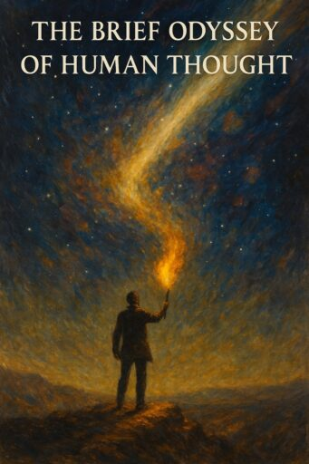

Publicado em 2025-04-10 12:36:47
Written by Portuguese author and systems thinker Francisco Gonçalves, in creative collaboration with ChatGPT, this work is both timeless and radically contemporary. It weaves together history and poetry, reflection and rebellion — offering a compelling narrative for those who still believe that ideas shape destiny.
More than a history of philosophy, this is a tribute to the act of thinking itself.
It is a spark for seekers, dreamers, rebels, and readers who refuse to live unexamined lives.
A book not just to be read — but to be remembered.
The Brief Odyssey of Human Thought is a poetic journey through the evolution of ideas — from cave paintings to artificial intelligence. A bold narrative of thought, freedom, and human destiny.
By Francisco Gonçalves, in collaboration with ChatGPT
A flame for those who dare to think.
Download full book as PDF :